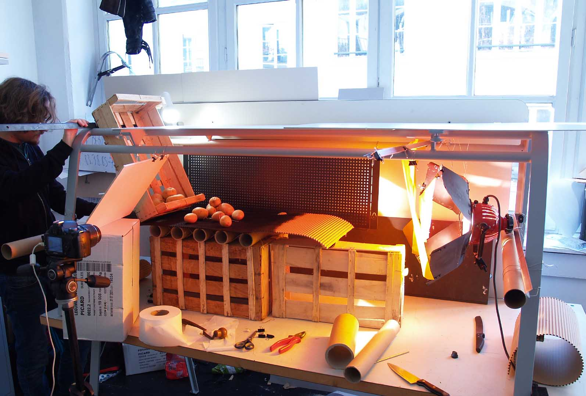
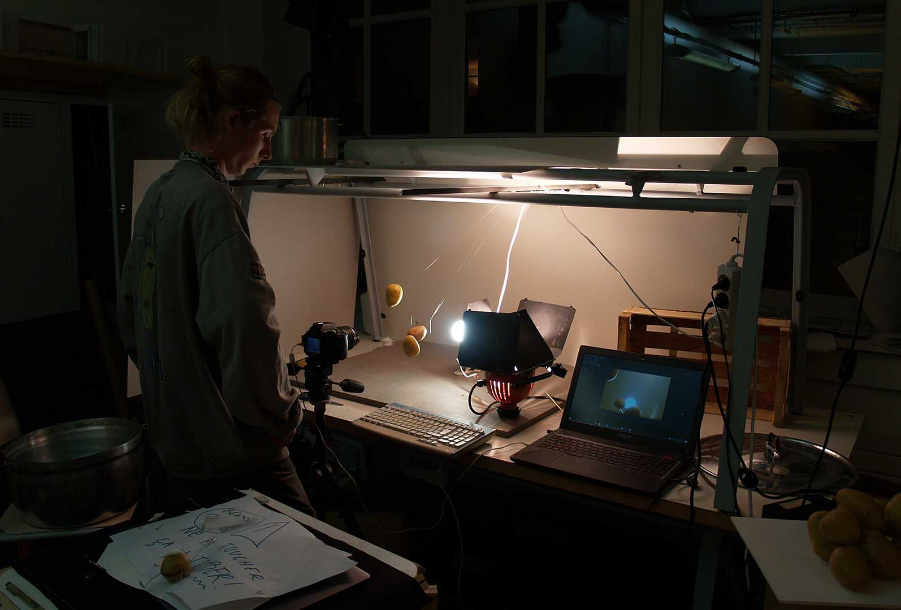
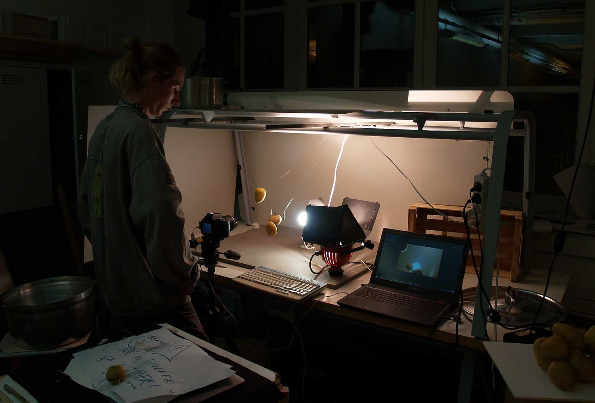

Pomme de Terre
2019
- Projet d'études
Une pomme de terre nostalgique du passé se réveille dans une caisse. Elle espère être cuisinée comme ses aïeules, mais le monde de la cuisine a bien changé...
Ce court métrage d’animation, réalisé avec Théophile Perrot lors d’un projet libre de 3 semaines, tente d’interroger le spectateur sur le lien qu’il entretient avec la production de ce qu’il consomme. Après avoir vu le traitement que subissent ses plats préparés, ne devrait il pas prendre le temps de cuisiner lui même ses repas ?
durée 3’45
Ce court métrage est entièrement réalisé en stop motion, avec des matériaux et aliments récupérés.
 


@ All right reserved @